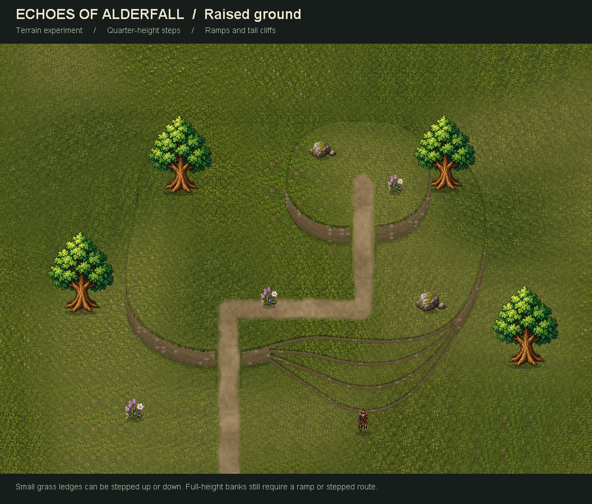

Original elevation study
World integration gallery
Rounded grassy terraces with low, walkable steps. Climb the shallow grass shelves or use a ramp; tall banks still block movement. Existing game terrain and artwork, with an experimental height renderer.

To walk around the standalone preview, run from the Java folder after building the review sources:
java -cp temp/elevation/classes com.alderfall.game.ElevationPreview --play
Click a visible surface to walk there, or use WASD / arrow keys. Close the window to exit.
Historical isolated study. The current world integration is available in the main gallery. Props are decorative; the climbing figure uses a standing pose. Reproduction and limitations.